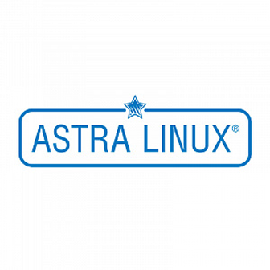
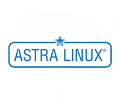

Astra Linux
Современная Российская операционная система для решения широкого спектра прикладных задач.
- Замена решений:
- Microsoft Windows Home/PR, Red Hat
- VMware, Microsoft Hyper-V, Red Hat virtualization, Citrix, KVM Linux

ГК Astra Linux (ООО «РусБИТех-Астра») — один из лидеров российской IT-индустрии, ведущий производитель программного обеспечения, в том числе защищенных операционных систем и платформ виртуализации. Разработка флагманского продукта, ОС семейства Astra Linux, ведется с 2008 года. На сегодня в штате компании более 300 высококвалифицированных разработчиков и специалистов технической поддержки.
Миссия компании – обеспечить технологический суверенитет России и ее лидерство в мировой IT-индустрии путем создания базовых технологий, специального и пользовательского ПО.
ГК Astra Linux – член ассоциации «Руссофт» и АРПП, обладатель множества дипломов, лауреат национальных и международных премий за уникальные решения в области создания и реализации защищенных информационных систем.
Партнеры

Оставить заявку сейчас
Напишите нам или закажите звонок — мы поможем. Выслушаем ваши задачи для бизнеса, и на их основе предложим варианты развития.